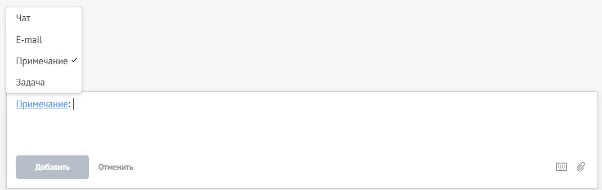
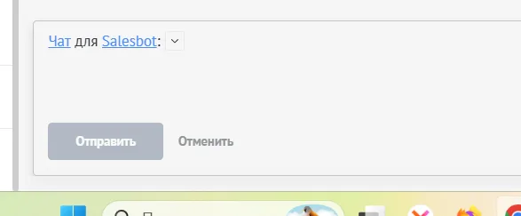
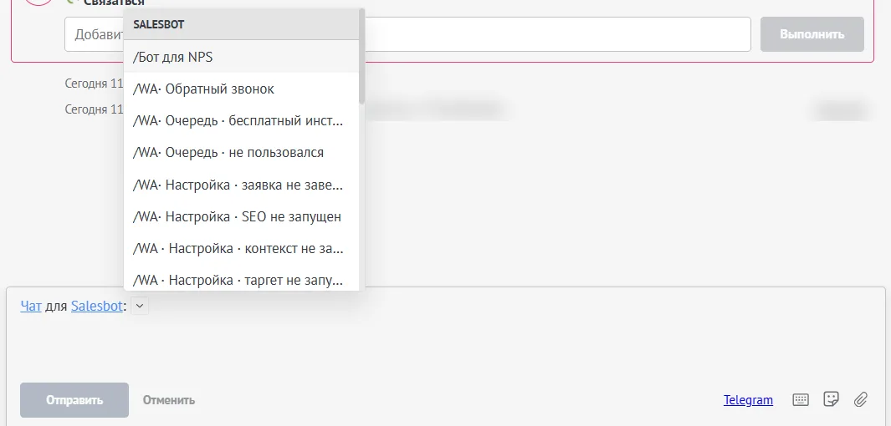

Salesbot: шаблоны в мессенджеры за один клик
Эти боты — исключительно для случаев недозвона (кроме «ВБ · инструкции», он отправляется после разговора). Если до клиента не дозвонились, отправьте ему готовое сообщение в WhatsApp, Telegram или MAX прямо из сделки. Бот сам подставит имя клиента и ваше имя.
Сразу после первого недозвона отправляем шаблон по недозвону.
Как запустить бота
Делайте строго в этом порядке: сначала контакт, потом чат. Если просто добавить номер и сразу искать бота, Salesbot в списке не появится.
1
Добавьте контакт. В сделке нажмите «Добавить контакт» и впишите номер телефона.
В поле имени пишем только имя, с большой буквы, например «Ирина». Фамилию и другие данные не вписываем. Имя берём то, что клиент указал при регистрации.
В поле имени пишем только имя, с большой буквы, например «Ирина». Фамилию и другие данные не вписываем. Имя берём то, что клиент указал при регистрации.
Имя есть и корректное → вписываем. Сообщение придёт именное: «Ирина, добрый день!»
Имени нет, оно на английском, странное или некорректное (логин, почта, набор символов) → поле имени оставляем пустым. Сообщение придёт без имени: «Добрый день!»
2
Когда контакт заполнен, внизу сделки нажмите на синее слово «Примечание» и выберите «Чат».

Нажмите «Примечание» → «Чат»
3
Появится «Чат для …». Нажмите на эту надпись и в блоке «Боты» выберите Salesbot.
Блок «Боты» → Salesbot
4
Рядом с «Чат для Salesbot» нажмите стрелочку ˅.

Стрелочка справа от «Salesbot»
5
Выберите шаблон: сначала мессенджер, потом сценарий. Например, «/WA· Обратный звонок».

Список шаблонов
6
Нажмите «Запуск».
Как проверить, что сообщение ушло
Через несколько секунд в ленте сделки появится синее сообщение с подписью «SalesBot (название бота)».

Так выглядит отправленное сообщение
✓ Доставлено Всё хорошо, клиент получил сообщение.
Ошибка Мессенджер не принял сообщение. Смотрите блок ниже.
F5 Иногда лента в amoCRM не обновляется сама и сообщения не видно. Обновите страницу, и оно появится со статусом. Запускать бота повторно не нужно.
Какой шаблон выбрать
Для каждого сценария есть бот под каждый мессенджер. Название бота: мессенджер · сценарий.
| Сценарий | Когда запускать |
|---|---|
| Очередь · не пользовался | Зарегистрировался, но ничего не делал на платформе |
| Очередь · бесплатный инструмент | Воспользовался одним из бесплатных инструментов |
| Обратный звонок | Заказал обратный звонок, но не взял трубку |
| Настройка · заявка не завершена | Начал оформлять заявку на помощь с настройкой и не закончил |
| Настройка · SEO не запущен | Начал проект по SEO, но не запустил |
| Настройка · контекст не запущен | Начал проект по контекстной рекламе, но не запустил |
| Настройка · таргет не запущен | Начал проект по таргетированной рекламе, но не запустил |
| Тест SEO | Оставил заявку на бесплатное двухнедельное тестирование SEO |
| ВБ · недозвон | При регистрации интересовался инструментами для Wildberries |
| ВБ · инструкции | В продолжение разговора отправить инструкции по инструментам для Wildberries |
Если сообщение не ушло
Если по выбранному мессенджеру вышла «Ошибка», пробуем следующий мессенджер.
Правила отправки
- Пишем в один мессенджер, не во все сразу. После отправки смотрим статус и дальше действуем по текущим правилам отправки.
- Шаблон выбираем по ситуации клиента, смотрите таблицу «Какой шаблон выбрать».
- В имя контакта пишем только имя. Фамилию, компанию, почту или ник бот вставит в приветствие.
Вопросы и новые боты
Есть вопрос или не хватает какого-то бота — приходите к Лилии с предложениями.
PromoPult · Справочник менеджера